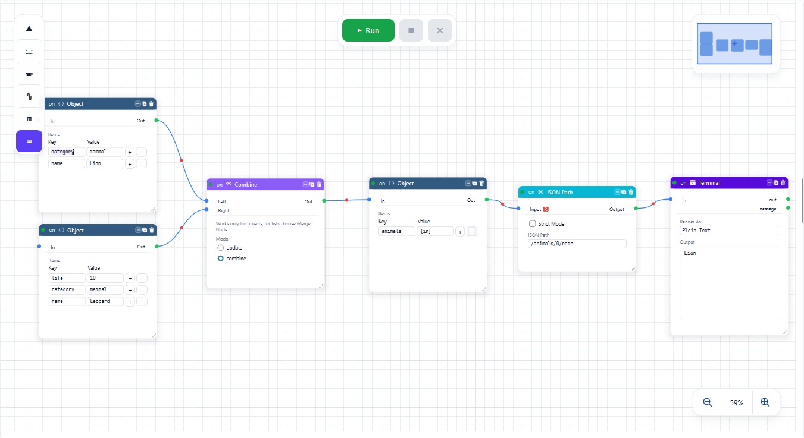
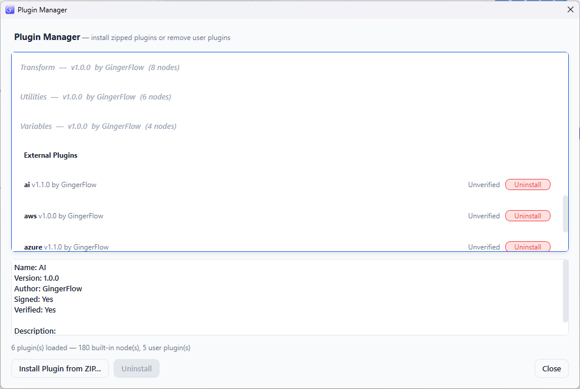

See the whole flow
Compose typed nodes on a canvas and follow data from source to outcome. No hidden branches. No mystery state.
Explore visual authoring ->Open workflow automation for teams
GingerFlow is a visual workflow engine for building, executing, and reusing data workflows - with every connection, decision, and result in view.
A clearer way to automate
It is a system of decisions, data, and dependencies. GingerFlow makes that system explicit, inspectable, and easy to evolve.
Compose typed nodes on a canvas and follow data from source to outcome. No hidden branches. No mystery state.
Explore visual authoring ->Validate graphs, retry failures, inspect timing, and cancel safely. The runtime is designed to show its work.
Explore the runtime ->Turn proven sections into custom nodes, or extend the system with Python plugins without touching the core.
Explore extensibility ->Inside the app
The editor, inspector, timeline, and console are designed to answer one question at a time: what is connected, what is configured, and what happened on the last run.




Screenshots reflect GingerFlow 1.0.3-Beta on Windows. Download the release to try it yourself.
One canvas. Many possibilities.
Start with a simple automation. Scale to streaming pipelines, API integrations, data quality checks, and long-running listeners without leaving the visual environment.
See all capabilities ->Typed ports, alignment tools, notes, regions, quick search, and undo/redo.
DAG validation, conditional branches, repeats, retries, cancellation, and isolation.
Logic, data, strings, files, networks, databases, archives, images, and more.
Process binary files and CSV data in bounded chunks or row batches.
Bring your own building blocks
Package Python nodes as ZIP plugins and install them from the Plugin Manager. Use the Python ecosystem for AI, OCR, analytics, databases, and domain-specific tools.
Read the plugin guide ->{
"type": "acme.normalize",
"display_name": "Normalize",
"inputs": [
{ "name": "record",
"type": "object" }
],
"outputs": [ "clean_record" ]
}Learn the system
Ready when you are